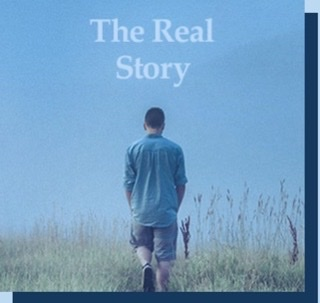

Magdalena—Denïzé is a preeminent writer whose professional career began back in 2000 after their first published work. Since then, they’ve explored different writing genres and created a loyal group of fans who eagerly await their latest releases. With numerous bestsellers and awards to their name, Magdalena—Denïzé continues to push literary boundaries.
Check out the latest work by Magdalena—Denïzé. The Real Story took them all over the world while being written, and the outcome is an influential page-turner unlike any of their prior projects.

.... сърца споени,
ти спомняш ли си? Плачат в тая нощ сърца,
в самата обич отчуждени.